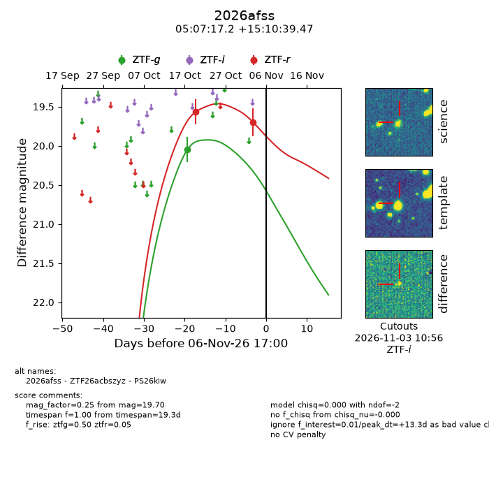
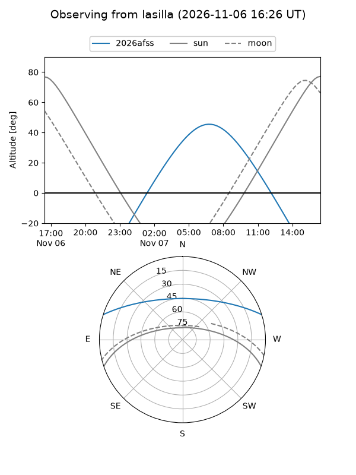
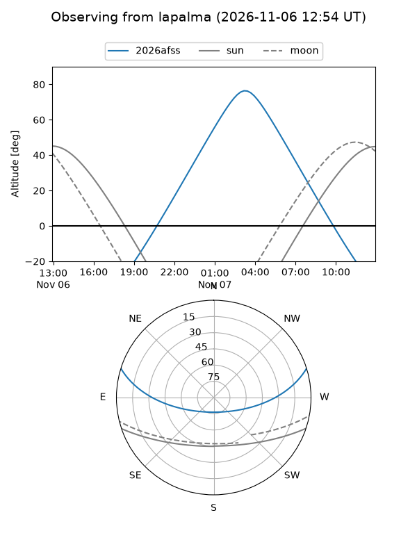
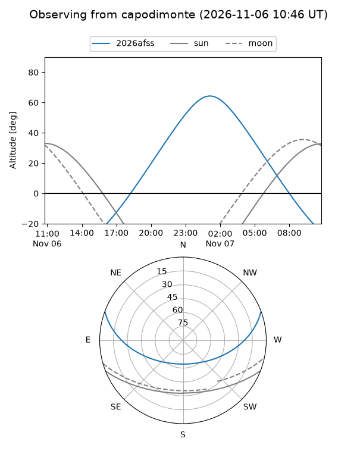
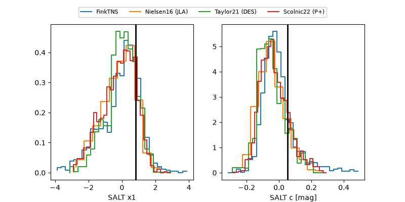

2026afss
Target 2026afss at 2026-11-06 17:06
Aliases and brokers:
FINK-ZTF: ztf.fink-portal.org/ZTF26acbszyz
Lasair-ZTF: lasair-ztf.lsst.ac.uk/objects/ZTF26acbszyz
ALeRCE-ZTF: alerce.online/object/ZTF26acbszyz
YSE-PZ: ziggy.ucolick.org/yse/transient_detail/2026afss
TNS name: wis-tns.org/object/2026afss
Direct TNS query: direct search
alt names
ZTF26acbszyz (ztf,fink_ztf)
2026afss (tns,yse)
PS26kiw (panstarrs)
Coordinates:
equatorial (ra, dec) = 76.8216,+15.17763
equatorial (HMS+DMS) = 05:07:17.19,+15:10:39.47
galactic (l, b) = (186.7590,-14.93152)
Flags:
peak dt: +13.3
Photometry:
last ztfg=20.05, ztfr=19.70
1 ztfg, 2 ztfr detections
Lightcurve

Visibility



Additional plots
